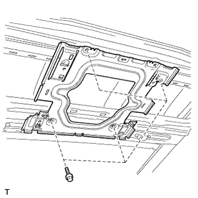
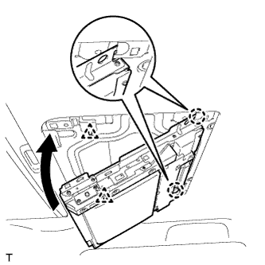
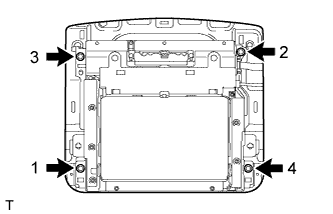

ТЕЛЕВИЗИОННЫЙ ДИСПЛЕЙ > УСТАНОВКА |
| 1. УСТАНОВИТЕ КРОНШТЕЙН ТЕЛЕВИЗИОННОГО ДИСПЛЕЯ |
|  |
Установите кронштейн и закрепите его 4 болтами.
| 2. УСТАНОВИТЕ ОБИВКУ КРЫШИ В СБОРЕ |
Установите обивку крыши (Нажмите здесь).
| 3. УСТАНОВИТЕ ТЕЛЕВИЗИОННЫЙ ДИСПЛЕЙ В СБОРЕ |
|  |
Присоедините дисплей к 2 захватам на передней стороне кронштейна, сдвинув его в направлении стрелки на рисунке, а затем введите в зацепление 2 фиксатора, чтобы временно закрепить дисплей.
|  |
Закрепите телевизионный дисплей 4 болтами.
Подсоедините разъемы.
| 4. УСТАНОВИТЕ ОСНОВАНИЕ ТЕЛЕВИЗИОННОГО ДИСПЛЕЯ |
Введите в зацепление 6 захватов и 4 фиксатора, чтобы установить основание телевизионного дисплея.
| 5. ПОДСОЕДИНИТЕ ПРОВОД К ОТРИЦАТЕЛЬНОМУ ВЫВОДУ АККУМУЛЯТОРНОЙ БАТАРЕИ |